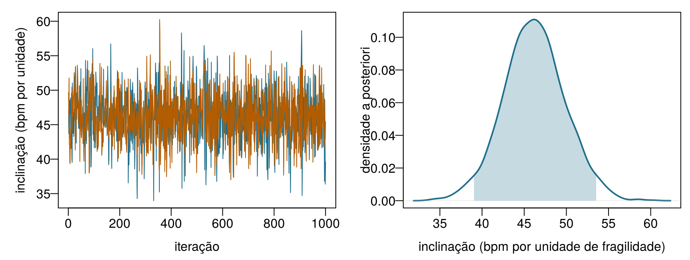
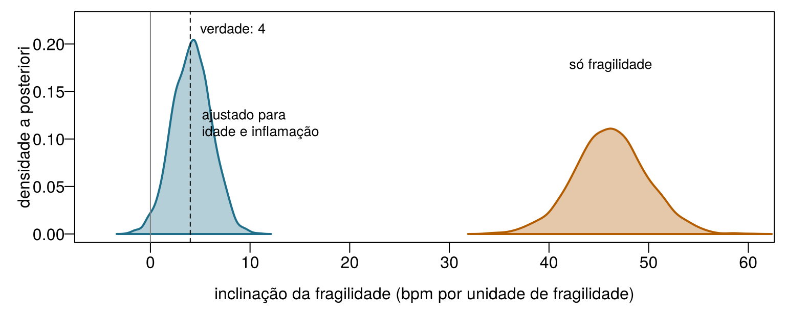

icu8 = FileAttachment("data/icu_aki.csv").csv({typed: true})
akiD = icu8.filter(d => d.site === "ICU_D").map(d => d.delta_creatinine_48h >= 0.3 ? 1 : 0)
viewof m0 = Inputs.range([0.05, 0.95], {value: 0.5, step: 0.01, label: "Média a priori"})
viewof s0 = Inputs.range([2, 300], {value: 2, step: 1, label: "Força a priori (pacientes imaginários)"})
viewof nD = Inputs.range([0, 313], {value: 10, step: 1, label: "Pacientes do ICU_D observados, n"})8 Aprendizado bayesiano e incerteza preditiva
Uma UTI recém-inaugurada internou os seus 10 primeiros pacientes; 2 desenvolveram LRA. Antes da inauguração, Emma acreditava que a taxa de LRA da unidade seria de cerca de 60 %, e estava tão confiante quanto se já tivesse visto 10 pacientes, 6 deles com LRA. Trate a crença dela como 10 pacientes imaginários, some os 10 reais e calcule no que ela deveria acreditar agora. Decimais são permitidos.
| Pergunta | Sua resposta |
|---|---|
| Pacientes com LRA, imaginários mais reais | |
| Total de pacientes, imaginários mais reais | |
| Estimativa atualizada de Emma para a taxa de LRA (uma proporção) | |
| Se a crença dela valesse 100 pacientes imaginários (60 com LRA), a estimativa atualizada ficaria… |
Como usar este capítulo
Começando por aqui?
Este capítulo aproveita algumas ideias dos anteriores. Em uma linha cada:
- Modelos e decisões. Um modelo (Definição 1.3) transforma dados em informação; uma decisão
- combina essa informação com valores. Com as pontuações usadas no Capítulo 1, o pacote de proteção renal é a melhor escolha sempre que a probabilidade de LRA está acima do limiar \(t = 0{,}25\) (Seção 1.5).
- Probabilidade, verossimilhança e teorema de Bayes (Capítulo 2). A verossimilhança \(L(\theta)\) mede o quanto cada valor de um parâmetro \(\theta\) explica bem os dados; o teorema de Bayes transforma uma distribuição a priori em uma a posteriori: a posteriori ∝ verossimilhança × a priori. O limiar para agir é \(t = C_{\text{FP}}/(C_{\text{FP}} + C_{\text{FN}})\), definido pelas perdas dos dois tipos de erro.
- Conjuntos de treino e de teste (Capítulo 3). Os modelos são avaliados em pacientes que não viram; a UTI Ala 7 usa a divisão comum do livro (1.000 pacientes de treino e 250 de teste). A raiz do erro quadrático médio (RMSE) e o erro absoluto médio (MAE) medem erros numéricos.
- Regressão linear e logística (Capítulo 4, Capítulo 5). Um modelo linear prevê \(\beta_0 + \beta_1 x_1 + \dots\); um modelo logístico passa a mesma soma pela função logística, em forma de S, para obter uma probabilidade. O Capítulo 4 também apresentou intervalos de confiança e intervalos de predição.
- Árvores e florestas (Capítulo 6). Florestas aleatórias e boosting somam muitas árvores; elas preveem bem, mas dão um único número, sem nenhuma indicação de incerteza.
| Exemplo | Quem ou o quê | Desfecho | Rostos que você vai conhecer |
|---|---|---|---|
| 1 UTI Ala 7 | 1.250 pacientes de UTI em 4 hospitais | variação da creatinina em 48 h (lesão renal aguda se ≥ 0,3 mg/dL) | Aoife (71 anos, sepse, risco limítrofe), Tomás (54 anos, risco baixo), Priya (38 anos, risco alto); a Dra. Emma Walsh; Seán, o farmacêutico |
| 2 Ensaio ONCO-1 | 1.000 pacientes randomizados para quimioterapia ou não | redução do tumor (%) | pacientes #0042 e #0917 |
| 3 HomeBeat | 500 pessoas que usam um relógio inteligente em casa | escore de estresse, evento de deterioração | Lena |
| 4 CellWorks | 420 lotes de produção de uma terapia celular | escore de potência | lote CW-118 |
Os quatro conjuntos de dados são simulados e podem ser baixados no apêndice de dados. A apresentação completa está na Seção 1.1.
Este capítulo ensina os modelos a relatar a sua incerteza. Ele tem nove seções e um Lab, seis verificações rápidas, três widgets “Experimente”, um desafio e três missões de programação em R e Python. Reserve cerca de duas horas. Os modelos mais pesados (os amostradores do Stan e o BART) foram executados uma única vez, fora do navegador, e as suas amostras são carregadas aqui; no navegador você usa fórmulas exatas e grades, que dão as mesmas respostas para os modelos mais simples.
Notação em resumo (apenas para consulta)
| Símbolo | Significado | Seção |
|---|---|---|
| \(\theta\) | um parâmetro (aqui, uma taxa de LRA, uma média ou um coeficiente) | Seção 8.1 |
| \(p(\theta)\), \(p(\theta \mid \mathbf{y})\) | distribuição a priori e a posteriori de \(\theta\) | Seção 8.1 |
| \(\text{Beta}(a, b)\) | distribuição beta; \(a\) e \(b\) funcionam como contagens a priori de “sim” e “não” | Seção 8.2 |
| \(\beta_0, \beta_1, \sigma\) | intercepto, inclinação e desvio padrão residual de uma regressão | Seção 8.3 |
| \(\theta^{(s)}\), \(S\) | a \(s\)-ésima de \(S\) amostras da distribuição a posteriori | Seção 8.4 |
| \(\widehat{R}\), ESS | R-hat e tamanho efetivo da amostra, dois diagnósticos de MCMC | Seção 8.4 |
| \(\tilde y\) | um desfecho futuro de um novo paciente | Seção 8.6 |
| \(m\) | número de árvores no BART | Seção 8.8 |
A lista completa está na página de notação.
8.1 Do teorema de Bayes ao aprendizado bayesiano
No Capítulo 2, o teorema de Bayes atualizava a probabilidade de uma condição (fragilidade, LRA) assim que chegava uma evidência: uma frequência cardíaca alta, um exame de urina positivo. A regra era sempre a mesma, a posteriori ∝ verossimilhança × a priori. O aprendizado bayesiano aplica exatamente a mesma regra aos parâmetros de um modelo: a taxa de LRA de um hospital, a frequência cardíaca média de uma população, a inclinação de uma reta de regressão (Gelman et al. 2013; McElreath 2020).
O Capítulo 2 também apresentou as duas escolas de inferência. Na visão frequentista, um parâmetro é uma constante fixa e desconhecida; calculamos uma única melhor estimativa (muitas vezes por máxima verossimilhança) e descrevemos como essa estimativa variaria em amostras repetidas. Na visão bayesiana, os dados, depois de observados, são fixos, e o que é incerto é o parâmetro; essa incerteza é descrita por uma distribuição de probabilidade, antes dos dados (a distribuição a priori) e depois deles (a distribuição a posteriori). As duas visões usam a mesma verossimilhança. A diferença está no que cada uma permite dizer: só a visão bayesiana permite afirmar “a probabilidade de esta taxa de LRA estar acima de 60 % é 0,9”, uma frase que clínicos e gestores costumam querer ouvir (Spiegelhalter, Abrams, e Myles 2004).
Definição 8.1 (Distribuição a priori e a posteriori de um parâmetro) Para um parâmetro \(\theta\) e dados \(\mathbf{y}\), a distribuição a priori \(p(\theta)\) descreve o que se sabe ou se supõe sobre \(\theta\) antes de ver os dados, e a distribuição a posteriori descreve o que se sabe depois:
\[ p(\theta \mid \mathbf{y}) = \frac{p(\mathbf{y} \mid \theta)\, p(\theta)}{p(\mathbf{y})} \;\propto\; \underbrace{p(\mathbf{y} \mid \theta)}_{\text{verossimilhança}} \times \underbrace{p(\theta)}_{\text{a priori}} . \]
O denominador \(p(\mathbf{y})\) não depende de \(\theta\); ele apenas faz a distribuição a posteriori integrar 1. Todo resumo de que precisamos (um melhor palpite, um intervalo, a probabilidade de \(\theta\) ultrapassar um valor) é lido na distribuição a posteriori (Gelman et al. 2013).
O ciclo da Figura 8.1 é a forma como os clínicos já raciocinam. Emma tem uma expectativa sobre um novo paciente antes do primeiro exame de sangue; cada resultado a desloca; a expectativa deslocada é o ponto de partida quando chega o resultado seguinte. Um modelo bayesiano faz o mesmo, de forma explícita e com números. Daí decorrem três consequências, e o resto do capítulo ilustra cada uma delas. Com poucos dados, a distribuição a priori pesa e a distribuição a posteriori é larga. Com muitos dados, a verossimilhança domina e as respostas bayesiana e frequentista quase coincidem. E, como o resultado é uma distribuição inteira, ele pode ser levado adiante para predições e decisões com a sua incerteza intacta.
8.2 Aprendendo uma proporção: a distribuição a priori beta
O jeito mais rápido de ver o aprendizado bayesiano é estimar uma única proporção. Um gestor pergunta qual é a taxa de LRA no hospital ICU_D, um dos quatro hospitais da UTI Ala 7. Os outros três hospitais, juntos, trataram 937 pacientes, com uma taxa de LRA de 0,55. O ICU_D tem registros de 313 pacientes. Suponha que os examinemos um de cada vez, como se estivessem chegando.
Na porta de entrada, você juntou pacientes imaginários e reais. É exatamente isso que faz a distribuição beta. Uma distribuição a priori \(\text{Beta}(a, b)\) para uma taxa de LRA \(\theta\) se comporta como \(a\) pacientes imaginários com LRA e \(b\) sem; a sua média é \(a/(a+b)\), e ela fica mais estreita à medida que a força da distribuição a priori, \(a + b\), aumenta. Se então observamos \(k\) casos de LRA entre \(n\) pacientes reais, a distribuição a posteriori é novamente uma distribuição beta,
\[ \theta \mid \text{dados} \sim \text{Beta}(a + k,\; b + n - k), \qquad \mathbb{E}[\theta \mid \text{dados}] = \frac{a + k}{a + b + n} . \qquad(8.1)\]
A média a posteriori é um meio-termo entre a média a priori \(a/(a+b)\) e a proporção observada \(k/n\), ponderado pela força da distribuição a priori, \(a + b\), e pelo tamanho da amostra, \(n\). Quando a distribuição a posteriori pertence à mesma família da distribuição a priori, esta é chamada de conjugada; distribuições a priori conjugadas reduzem a atualização bayesiana a uma soma de contagens (Gelman et al. 2013, cap. 2).
Definição 8.2 (Escolha da distribuição a priori; distribuição a priori conjugada) Uma distribuição a priori é informativa quando codifica conhecimento real (estudos anteriores, outros hospitais, opinião de especialistas), fracamente informativa quando apenas exclui valores implausíveis (uma taxa de LRA está entre 0 e 1; uma inclinação de 1.000 bpm por unidade de fragilidade é absurda) e plana ou vaga quando trata todos os valores como quase igualmente plausíveis (Gelman et al. 2008). Uma distribuição a priori é conjugada a uma verossimilhança quando a distribuição a posteriori tem a mesma forma que ela, como acontece com a distribuição a priori beta para uma verossimilhança binomial. Seja qual for a escolha, ela deve ser declarada, justificada e verificada por uma análise de sensibilidade: ajuste novamente o modelo com outra distribuição a priori razoável e veja se a conclusão muda (Spiegelhalter, Abrams, e Myles 2004).
Para o ICU_D, uma distribuição a priori informativa natural toma emprestado dos outros três hospitais: média 0,55 e força de 100 pacientes, ou seja, \(\text{Beta}(55, 45)\). Depois dos primeiros 20 pacientes do ICU_D (12 com LRA), a Equação 8.1 dá uma média a posteriori de 0,558, com um intervalo de 95 % de 0,47 a 0,65. Com uma distribuição a priori plana, \(\text{Beta}(1, 1)\), os mesmos 20 pacientes dão um intervalo de 0,38 a 0,78: o conhecimento emprestado vale muito quando os dados são poucos. Depois de todos os 313 pacientes (212 com LRA), a distribuição a priori informativa dá 0,646 (0,60–0,69), perto da proporção observada 0,677: os dados assumiram o comando. Experimente você mesmo.
A priori, verossimilhança, a posteriori. As curvas descrevem o que se acredita sobre a taxa de LRA do ICU_D. Cinza: a distribuição a priori. Laranja: a verossimilhança dos pacientes observados até agora, reescalada para a mesma área. Azul: a distribuição a posteriori, que é (proporcional a) o produto das duas. Os pacientes são considerados na ordem do arquivo de dados. Meta: defina uma distribuição a priori cética igual à taxa dos outros hospitais (média a priori 0,55), com força de pelo menos 100 pacientes, e descubra quantos pacientes do ICU_D são necessários até que o intervalo de credibilidade de 95 % deixe de conter 0,55.
Observe três coisas no widget. Com \(n = 0\), a distribuição a posteriori é a distribuição a priori: sem dados, não há aprendizado. Com uma distribuição a priori plana (média 0,5, força 2), a distribuição a posteriori acompanha a verossimilhança quase exatamente, e o seu pico é a estimativa de máxima verossimilhança \(k/n\) do Capítulo 2. E, por mais forte que seja a distribuição a priori, dados suficientes acabam por superá-la, embora uma distribuição a priori que vale centenas de pacientes precise de centenas de pacientes para ser superada. É por isso que uma distribuição a priori forte precisa ser justificada por evidências de peso equivalente.
Para os curiosos: aprendendo uma média, e por que a distribuição a posteriori é uma média ponderada
A mesma lógica vale para a média \(\mu\) de uma medida como a frequência cardíaca de repouso, modelada como normal com um desvio padrão \(\sigma\) que tratamos como conhecido. Com uma distribuição a priori normal \(\mu \sim \mathcal{N}(m, s^2)\) e \(n\) observações com média \(\bar y\), a distribuição a posteriori também é normal, com
\[ \mathbb{E}[\mu \mid \mathbf{y}] = \frac{m/s^2 + n\bar y/\sigma^2}{1/s^2 + n/\sigma^2}, \qquad \operatorname{Var}(\mu \mid \mathbf{y}) = \frac{1}{1/s^2 + n/\sigma^2} . \]
O inverso de uma variância chama-se precisão. A média a posteriori é uma média da média a priori e da média dos dados ponderada pelas precisões, e a precisão a posteriori é a soma das duas precisões: a informação se soma (Gelman et al. 2013, ch. 2). Para os 10 primeiros participantes do HomeBeat (média 73,6 bpm), uma distribuição a priori \(\mathcal{N}(70, 10^2)\) e \(\sigma = 12\) bpm dão uma média a posteriori de 73,1 bpm, com desvio padrão de 3,5 bpm; os dados recebem um peso de 0,87 e a distribuição a priori, 0,13. Com todos os 500 participantes, o peso da distribuição a priori cairia abaixo de 0,01.
Duas analistas estimam a taxa de LRA do ICU_D. Uma usa uma distribuição a priori plana; a outra toma emprestada dos outros hospitais uma distribuição a priori que vale 100 pacientes. Qual afirmação está correta?
Atualize a taxa do ICU_D somando contagens. A distribuição a priori é \(\text{Beta}(55, 45)\). O código conta os casos de LRA k entre os primeiros n = 20 pacientes do ICU_D e devolve o intervalo de credibilidade de 95 % da distribuição a posteriori com qbeta(), a função quantil da distribuição beta. Preencha a lacuna para que o segundo parâmetro de forma conte os pacientes sem LRA.
A distribuição a posteriori é \(\text{Beta}(a + k,\; b + n - k)\).
qbeta(c(0.025, 0.975), a + k, b + n - k)A distribuição a posteriori é \(\text{Beta}(a + k,\; b + n - k)\).
beta.ppf([0.025, 0.975], a + k, b + n - k)8.3 Regressão linear bayesiana
Uma proporção tem um parâmetro. Uma regressão tem vários, e o aprendizado bayesiano trata todos eles como incertos ao mesmo tempo. Voltamos ao ensaio HomeBeat e perguntamos como a frequência cardíaca de repouso se relaciona com a fragilidade: um índice de fragilidade entre 0 (pessoa em boa forma) e cerca de 0,8 (muito frágil), registrado na inclusão. O modelo mais simples é a reta do Capítulo 4:
\[ \text{FC}_i \sim \mathcal{N}\!\left(\beta_0 + \beta_1\, \text{fragilidade}_i,\; \sigma^2\right), \qquad i = 1, \dots, 500 . \qquad(8.2)\]
Leia assim: a frequência cardíaca de repouso do participante \(i\) é sorteada de uma distribuição normal cuja média está sobre a reta \(\beta_0 + \beta_1\,\text{fragilidade}_i\) e cujo desvio padrão, \(\sigma\), descreve a dispersão em torno da reta. Os mínimos quadrados (Capítulo 4) dão uma única inclinação, \(\hat\beta_1 =\) 47,6 bpm por unidade de fragilidade, com um intervalo de confiança de 95 % de 40,4 a 54,8. Um modelo bayesiano acrescenta uma distribuição a priori para cada incógnita:
\[ \beta_0 \sim \mathcal{N}(60, 20^2), \qquad \beta_1 \sim \mathcal{N}(0, 20^2), \qquad \sigma \sim \text{meia-normal}(10) . \qquad(8.3)\]
São distribuições a priori fracas. A do intercepto diz que a frequência cardíaca de um participante com fragilidade média está provavelmente em algum ponto entre 20 e 100 bpm.1 A da inclinação está centrada em zero (nenhuma associação) e admite associações de qualquer sinal de até cerca de 40 bpm por unidade de fragilidade. A distribuição a priori meia-normal para \(\sigma\), uma distribuição normal dobrada em zero, diz que a dispersão em torno da reta é positiva e provavelmente inferior a 20 bpm (Gelman 2006). O teorema de Bayes dá então a distribuição a posteriori conjunta das três incógnitas,
1 O pacote de R usado abaixo, o rstanarm, aplica a distribuição a priori do intercepto ao valor da reta na média dos preditores, e não em fragilidade = 0, porque esse intercepto é muito menos incerto e mais fácil de interpretar. Ele devolve o intercepto na escala usual.
\[ p(\beta_0, \beta_1, \sigma \mid \mathbf{y}) \;\propto\; \prod_{i=1}^{500} \mathcal{N}\!\left(\text{FC}_i \mid \beta_0 + \beta_1\,\text{fragilidade}_i, \sigma^2\right) \; p(\beta_0)\, p(\beta_1)\, p(\sigma) . \]
Definição 8.3 (Regressão bayesiana) Uma regressão bayesiana é um modelo de regressão (linear, logística ou outro) no qual os coeficientes e quaisquer outras incógnitas (como \(\sigma\)) recebem distribuições a priori, e o resultado do ajuste é a sua distribuição a posteriori conjunta, em vez de um único conjunto de estimativas. Resumos pontuais (média ou mediana a posteriori), intervalos e probabilidades como \(P(\beta_1 > 0 \mid \text{dados})\) são todos lidos nessa distribuição a posteriori (Gelman et al. 2013, cap. 14).
Com três incógnitas, não há uma fórmula simples para a distribuição a posteriori. Na prática, ela é calculada por amostragem, com softwares como o Stan (Carpenter et al. 2017) e a sua interface para R, o rstanarm (Goodrich et al. 2024). Este é o código que produziu as amostras usadas neste capítulo; ele roda em poucos segundos em um notebook, mas não no navegador, por isso os seus resultados são carregados de um arquivo.
library(rstanarm)
fit_simple <- stan_glm(
resting_hr ~ frailty, data = hb, family = gaussian(),
prior_intercept = normal(60, 20, autoscale = FALSE),
prior = normal(0, 20, autoscale = FALSE),
prior_aux = normal(0, 10, autoscale = FALSE), # sigma: uma meia-normal(10)
chains = 2, iter = 2000, seed = 2026)autoscale = FALSE faz o rstanarm usar exatamente as distribuições a priori escritas acima, em vez de reescalá-las de acordo com a dispersão dos dados, como faz por padrão. O resultado é uma tabela de 2.000 amostras a posteriori: 2.000 combinações plausíveis de \((\beta_0, \beta_1, \sigma)\), cada uma compatível com os dados e com as distribuições a priori. Os resumos são simplesmente resumos das amostras (Tabela 8.1).
| Parâmetro | Média a posteriori | DP a posteriori | Intervalo de credibilidade de 95 % |
|---|---|---|---|
| \(\beta_0\) (intercepto, bpm) | 51,6 | 1,51 | 48,6 a 54,6 |
| \(\beta_1\) (bpm por unidade de fragilidade) | 46,2 | 3,64 | 39,0 a 53,5 |
| \(\sigma\) (bpm) | 11,2 | 0,35 | 10,5 a 11,9 |
A média a posteriori da inclinação, 46,2, fica um pouco mais perto de zero do que a inclinação de mínimos quadrados, 47,6: a distribuição a priori, centrada em zero, puxa um pouco. É o mesmo encolhimento (shrinkage) que você viu com a regressão ridge no Capítulo 4: com uma distribuição a priori normal centrada em zero, o valor mais provável dos coeficientes é exatamente uma estimativa ridge (Hastie, Tibshirani, e Friedman 2009, seção 3.4). Observe também que a distribuição a posteriori está centrada além da faixa de inclinações que a distribuição a priori considerava mais plausíveis (±40): 500 participantes bastam para superar uma distribuição a priori fraca, ao preço de um pequeno puxão em direção a zero. Com 30 participantes, o puxão seria muito maior.
Você pode calcular essa distribuição a posteriori sozinho, sem o Stan, por força bruta: experimente uma grade fina de inclinações candidatas e avalie verossimilhança × a priori em cada uma.
Uma distribuição a posteriori em uma grade. Para manter a grade unidimensional, o código mantém fixos o intercepto (na frequência cardíaca média, depois de centrar a fragilidade) e \(\sigma\), e explora apenas a inclinação \(\beta_1\). Ele calcula o logaritmo da verossimilhança e o logaritmo da distribuição a priori para 1.001 inclinações candidatas. Preencha a lacuna para que o logaritmo da distribuição a posteriori seja o logaritmo da verossimilhança mais o logaritmo da distribuição a priori; o logaritmo transforma “verossimilhança × a priori” em uma soma. A última linha devolve a média a posteriori da inclinação.
O vetor com os valores do logaritmo da distribuição a priori já está no código, uma linha acima da lacuna.
logpost <- loglik + logpriorO array com os valores do logaritmo da distribuição a priori já está no código, uma linha acima da lacuna.
logpost = loglik + logpriorUma grade funciona para um ou dois parâmetros. Com dez parâmetros e 100 pontos de grade para cada um, ela exigiria \(100^{10}\) avaliações, mais do que qualquer computador consegue fazer. É por isso que precisamos de um caminho mais inteligente.
8.4 Como a distribuição a posteriori é calculada: MCMC
A ideia por trás da computação bayesiana moderna é substituir uma fórmula por uma amostra. Se pudéssemos sortear milhares de valores \(\theta^{(1)}, \dots, \theta^{(S)}\) da distribuição a posteriori, toda pergunta se tornaria uma contagem: a média a posteriori é a média das amostras, um intervalo de 95 % vai do percentil 2,5 ao percentil 97,5 das amostras, e \(P(\beta_1 > 0 \mid \text{dados})\) é a proporção de amostras acima de zero. Essa é a ideia de Monte Carlo, batizada em homenagem ao cassino (Metropolis e Ulam 1949).
A dificuldade é obter as amostras quando a distribuição a posteriori só é conhecida a menos da constante \(p(\mathbf{y})\). O Monte Carlo via cadeias de Markov (MCMC, Markov chain Monte Carlo) resolve isso com um passeio aleatório. Imagine um caminhante sobre a paisagem da distribuição a posteriori. A cada passo, o caminhante propõe um movimento para um ponto próximo; os movimentos morro acima (para valores mais plausíveis) são sempre aceitos, os movimentos morro abaixo só às vezes, com probabilidade igual à razão entre as duas alturas. Só essa razão é necessária, então a constante desconhecida se cancela. Depois de algum tempo, o caminhante visita cada região da paisagem em proporção à sua probabilidade a posteriori. Esse é o algoritmo de Metropolis (Metropolis et al. 1953; Hastings 1970). O Stan usa um parente mais eficiente, o Monte Carlo hamiltoniano com o No-U-Turn sampler, que usa a inclinação da paisagem para dar passos longos e bem direcionados, em vez de passos curtos e aleatórios (Neal 2011; Hoffman e Gelman 2014; Carpenter et al. 2017).
Definição 8.4 (Monte Carlo via cadeias de Markov (MCMC); gráfico de traço, R-hat, tamanho efetivo da amostra) O MCMC produz uma sequência de amostras (uma cadeia) cuja distribuição se aproxima da distribuição a posteriori. A primeira parte de cada cadeia, o aquecimento (warm-up), é descartada. Várias cadeias são executadas a partir de pontos de partida diferentes e verificadas quanto à concordância com três diagnósticos padrão (Gelman e Rubin 1992; Vehtari et al. 2021; Gabry et al. 2019):
- um gráfico de traço (trace plot) mostra o valor de cada cadeia em função da iteração; cadeias saudáveis se sobrepõem e parecem uma “lagarta peluda”, sem tendência e sem trechos planos;
- o R-hat (\(\widehat{R}\)) compara a variação entre as cadeias com a variação dentro delas; valores próximos de 1 (na prática atual, abaixo de 1,01) sugerem que as cadeias concordam;
- o tamanho efetivo da amostra (ESS, effective sample size) é o número de amostras independentes que conteriam a mesma informação que as amostras correlacionadas das cadeias; algumas centenas costumam bastar para médias e intervalos de 95 %.
Diagnosticar é uma habilidade do olhar. Os quatro painéis da Figura 8.2 mostram três cadeias cada um para o mesmo parâmetro (a inclinação da fragilidade da Equação 8.2), produzidas por quatro amostradores com ajustes diferentes. Só um deles é confiável.
![Quatro painéis com três cadeias coloridas cada. Painel A: as três cadeias começam muito separadas, perto de 100, 50 e menos 10, e se aproximam lentamente sem se encontrar. Painel B: as cadeias sobem e descem lentamente entre 44 e 52, cada uma em sua própria região por longos trechos. Painel C: as três cadeias se sobrepõem completamente e oscilam rapidamente entre cerca de 38 e 54, como uma lagarta peluda. Painel D: as cadeias são linhas planas por longos trechos, com apenas alguns saltos repentinos.](ch08.pt_files/figure-html/fig-ch08-traces-1.png)
Associe cada painel da Figura 8.2 ao seu diagnóstico.
- Painel A Ainda não convergiu
- Painel B Mistura lenta
- Painel C Confiável
- Painel D Travado (poucos movimentos aceitos)
Confira a sua leitura: R-hat e tamanho efetivo da amostra de cada painel
| Painel | R-hat | ESS (bulk) | Amostrador |
|---|---|---|---|
| A | 3,61 | 3 | Metropolis, passos pequenos, pontos de partida dispersos, aquecimento não descartado |
| B | 1,60 | 5 | Metropolis, passos muito pequenos |
| C | 1,00 | 1456 | Stan (No-U-Turn sampler), aquecimento descartado |
| D | 2,77 | 4 | Metropolis, passos grandes demais |
Só o painel C passa: R-hat próximo de 1 e um tamanho efetivo da amostra próximo das próprias 1.500 amostras (Vehtari et al. 2021). As cadeias do painel A ainda não chegaram à distribuição a posteriori: descarte mais aquecimento ou rode por mais tempo. O painel B está na região certa, mas cada cadeia a explora tão devagar que 1.500 amostras contêm a informação de apenas um punhado de amostras independentes. O painel D propõe movimentos tão grandes que quase todos são rejeitados, e as cadeias ficam paradas. Rodar B ou D por mais tempo acabaria ajudando, mas a solução de verdade é um amostrador mais bem ajustado, que é o que o aquecimento do Stan faz automaticamente (Hoffman e Gelman 2014; Carpenter et al. 2017).
O ajuste real é saudável. Nos dois modelos do HomeBeat, todos os parâmetros têm \(\widehat{R} \le\) 1,006 e um ESS (bulk) de pelo menos 1586; a Figura 8.3 mostra o gráfico de traço e a densidade a posteriori da inclinação.

O modelo bayesiano de uma colega para os escores de estresse do HomeBeat relata \(\widehat{R} = 1{,}08\) para um coeficiente e um ESS (bulk) de 40. O que ela deve fazer antes de ler o intervalo de credibilidade?
8.5 Lendo a distribuição a posteriori: intervalos de credibilidade e a probabilidade de um efeito
Definição 8.5 (Intervalo de credibilidade; probabilidade a posteriori de um efeito) Um intervalo de credibilidade de 95 % é um intervalo que contém 95 % da probabilidade a posteriori; a escolha usual vai do percentil 2,5 ao percentil 97,5 das amostras a posteriori. Dados o modelo, as distribuições a priori e os dados, há uma probabilidade de 95 % de o parâmetro estar dentro dele. A probabilidade a posteriori de um efeito, como \(P(\beta_1 > 0 \mid \text{dados})\), é a proporção da distribuição a posteriori acima de zero, estimada pela proporção de amostras acima de zero (Gelman et al. 2013).
Um intervalo de confiança (Capítulo 4) responde a uma pergunta diferente (Neyman 1937). Os seus “95 %” descrevem o procedimento: se o estudo fosse repetido muitas vezes, 95 % dos intervalos calculados dessa forma conteriam o valor verdadeiro. Ele não diz que este intervalo específico contém o valor com probabilidade 0,95, embora seja assim que ele é lido com muita frequência (Morey et al. 2016). Com distribuições a priori fracas e dados abundantes, os dois intervalos costumam ser numericamente próximos (para a inclinação do HomeBeat, 40,4–54,8 contra 39,0–53,5), de modo que a diferença prática está no que você pode afirmar.
| Intervalo de credibilidade bayesiano | Intervalo de confiança frequentista | |
|---|---|---|
| O que é tratado como incerto? | O parâmetro | O intervalo (ele muda de amostra para amostra) |
| O que significa “95 %” | \(P(\text{parâmetro no intervalo} \mid \text{dados}) = 0{,}95\) | 95 % dos intervalos obtidos em amostras repetidas conteriam o valor verdadeiro |
| Depende de uma distribuição a priori? | Sim | Não |
| Dá \(P(\beta_1 > 0 \mid \text{dados})\)? | Sim, diretamente | Não; um valor-p é outra quantidade |
| Principal risco | Uma distribuição a priori errada e forte demais | Interpretá-lo como uma afirmação de probabilidade sobre o parâmetro |
No modelo simples do HomeBeat, todas as 2.000 amostras da inclinação da fragilidade são positivas: \(P(\beta_1 > 0 \mid \text{dados}) \approx\) 1,00. Dados este modelo e estas distribuições a priori, é praticamente certo que a frequência cardíaca de repouso aumenta com a fragilidade nesta população, em cerca de 4,6 bpm a cada 0,1 de fragilidade.
8.5.1 Uma probabilidade só é tão boa quanto o seu modelo
Agora, a ressalva importante. O HomeBeat é simulado, então conhecemos a verdade: no código que o gerou (sim_homebeat.R), a fragilidade eleva a frequência cardíaca de repouso em 4 bpm por unidade (0,4 bpm a cada 0,1 de fragilidade), dez vezes menos do que o modelo acima sugere. De onde vem o resto? Os participantes mais velhos são, ao mesmo tempo, mais frágeis e têm frequências cardíacas de repouso mais altas, e o mesmo vale para os participantes com mais inflamação. A idade e a inflamação são fatores de confusão (Hernán e Robins 2020) (Seção 1.10): elas empurram a fragilidade e a frequência cardíaca para cima ao mesmo tempo, e o modelo simples atribui à fragilidade o efeito delas. Incluí-las no modelo,
\[ \text{FC}_i \sim \mathcal{N}\!\left(\beta_0 + \beta_1\,\text{fragilidade}_i + \beta_2\,\text{idade}_i + \beta_3\,\text{inflamação}_i,\; \sigma^2\right), \]
muda completamente a resposta (Figura 8.4): a inclinação da fragilidade passa a ser 4,2 bpm por unidade (intervalo de credibilidade de 95 % de 0,4 a 8,0), perto dos 4 verdadeiros, e \(P(\beta_1 > 0 \mid \text{dados})\) cai de 1,00 para 0,98.

A lição não é sobre Bayes, e é justamente a que o primeiro modelo do HomeBeat quase escondeu. Toda probabilidade a posteriori é condicional ao modelo. O modelo simples estava completamente seguro de algo que, como afirmação sobre causa, está errado, porque o modelo deixou de fora os fatores de confusão. Mais dados só o teriam deixado ainda mais seguro. Os métodos bayesianos quantificam a incerteza dentro de um modelo; eles não protegem contra um modelo que responde à pergunta errada (Gelman et al. 2013, cap. 6). Para perguntas do tipo “o que aconteceria se a fragilidade mudasse?”, o Capítulo 13 oferece as ferramentas.
O modelo simples relata \(P(\beta_1 > 0 \mid \text{dados}) \approx 1\) para a fragilidade. Qual leitura está correta?
8.6 Prevendo uma pessoa: a distribuição preditiva a posteriori
De volta à Lena. O Capítulo 2 comparou a frequência cardíaca de repouso dela, de 88 bpm, com a dos 500 participantes e constatou que só cerca de 8 % deles têm valores tão altos. Mas a Lena tem 72 anos, índice de fragilidade 0,55 e escore de inflamação 4,1. A pergunta real da enfermeira é se 88 bpm é incomum para alguém como ela. Um modelo pode responder de duas formas diferentes, e confundi-las é um dos erros mais comuns no relato de predições.
- Onde está a frequência cardíaca média das pessoas como a Lena? Para cada amostra a posteriori \(s\) do modelo ajustado, calcule o ponto na superfície de regressão, \(\mu^{(s)} = \beta_0^{(s)} + \beta_1^{(s)}\cdot 0{,}55 + \beta_2^{(s)} \cdot 72 + \beta_3^{(s)} \cdot 4{,}1\). Os 2.000 valores de \(\mu^{(s)}\) descrevem a nossa incerteza sobre a média: média a posteriori de 85,2 bpm, intervalo de credibilidade de 95 % de 84,5 a 86,0 bpm. Ele é estreito, porque 500 participantes determinam bem a superfície de regressão.
- Que leitura a própria Lena poderia mostrar? Os indivíduos se dispersam em torno da média com desvio padrão \(\sigma\). Para cada amostra, simule uma nova leitura \(\tilde y^{(s)} \sim \mathcal{N}(\mu^{(s)}, \sigma^{(s)2})\). Essas amostras formam a distribuição preditiva a posteriori: 95 % delas ficam entre 75,0 e 95,5 bpm, e 29 % estão acima de 88 bpm.
Definição 8.6 (Distribuição preditiva a posteriori) A distribuição preditiva a posteriori de um desfecho futuro \(\tilde y\) para um novo indivíduo com atributos \(\tilde{\mathbf{x}}\) calcula a média da predição do modelo sobre toda a distribuição a posteriori:
\[ p(\tilde y \mid \tilde{\mathbf{x}}, \mathbf{y}) = \int p(\tilde y \mid \tilde{\mathbf{x}}, \theta)\, p(\theta \mid \mathbf{y})\, d\theta . \]
Na prática: para cada amostra a posteriori \(\theta^{(s)}\), simule um \(\tilde y^{(s)}\) a partir do modelo. O intervalo de predição resultante contém dois tipos de incerteza: sobre os parâmetros (que diminui com mais dados) e sobre o indivíduo (a dispersão \(\sigma\), que não diminui) (Gelman et al. 2013, cap. 1).
Portanto, 88 bpm é algo totalmente comum para uma pessoa de 72 anos com a fragilidade e a inflamação da Lena; mais de um quarto das pessoas como ela teriam uma leitura tão alta em uma noite qualquer. Comparado com o ensaio inteiro, o valor parecia incomum; comparado com pessoas como ela, não é. A enfermeira pode arquivar o alerta, e o modelo lhe disse não apenas o seu melhor palpite, mas também a que distância dele uma leitura normal pode estar.
Um intervalo de predição para um participante. O histograma laranja mostra 2.000 amostras da distribuição preditiva a posteriori da frequência cardíaca de repouso de um participante com o perfil que você escolher; a faixa azul é o intervalo de credibilidade de 95 % da frequência cardíaca média das pessoas com esse perfil. A linha tracejada marca os 88 bpm da Lena. O modelo é a regressão ajustada do HomeBeat, com amostras pré-calculadas pelo Stan. Meta: mantenha a fragilidade (0,55) e a inflamação (4,1) da Lena e diminua a idade até que 88 bpm fique fora do intervalo de predição de 95 %.
Para o perfil da Lena, o intervalo de credibilidade de 95 % da frequência cardíaca média é de cerca de 84,5–86,0 bpm, mas o intervalo de predição de 95 % é de cerca de 75,0–95,5 bpm. Por que o segundo é tão mais largo?
Simule a próxima leitura da Lena. As 2.000 amostras a posteriori do modelo ajustado estão carregadas em draws (colunas b0, b_frailty, b_age, b_infl, sigma). O código calcula a frequência cardíaca média mu das pessoas como a Lena para cada amostra e depois simula uma nova leitura por amostra. Preencha a lacuna com a coluna que dá o desvio padrão entre pessoas, para que o resultado seja um intervalo de predição de 95 %.
Use a coluna inteira de amostras, draws$sigma, para que a incerteza sobre \(\sigma\) também seja levada em conta.
y_new <- rnorm(nrow(draws), mean = mu, sd = draws$sigma)Use a coluna inteira de amostras, draws["sigma"], para que a incerteza sobre \(\sigma\) também seja levada em conta.
y_new = rng.normal(loc=mu, scale=draws["sigma"])8.7 Risco com incerteza: regressão logística bayesiana na UTI Ala 7
Na assistência à saúde, um risco é uma probabilidade: a chance de que um desfecho adverso (deterioração, infecção, LRA) aconteça com este paciente em um dado intervalo de tempo. Um modelo de risco, portanto, estima uma probabilidade, e um modelo de risco bayesiano vai um passo além: ele dá uma distribuição inteira de valores plausíveis para essa probabilidade. A partir dela podemos ler uma melhor estimativa, um intervalo de credibilidade para o risco e a probabilidade de o risco ultrapassar um limiar clinicamente importante. Uma distribuição a posteriori assim é um objeto de risco: ela responde às perguntas que os clínicos de fato fazem, “qual é a probabilidade?”, “quão seguros estamos?” e “mais informação mudaria a nossa opinião?” (Spiegelhalter, Abrams, e Myles 2004).
Ajustamos novamente o modelo da UTI Ala 7 do Capítulo 5 (LRA a partir do SOFA, do lactato, da pressão arterial média mínima, da creatinina basal e da adesão ao protocolo, nos mesmos 1.000 pacientes de treino) como uma regressão logística bayesiana, com distribuições a priori fracamente informativas \(\mathcal{N}(0, 2^2)\) para os coeficientes e \(\mathcal{N}(0, 5^2)\) para o intercepto (Gelman et al. 2008):
fit_aki <- stan_glm(aki ~ sofa + lactate + map_min + baseline_creat + protocol_adherence,
data = train, family = binomial(link = "logit"),
prior = normal(0, 2, autoscale = FALSE),
prior_intercept = normal(0, 5, autoscale = FALSE),
chains = 2, iter = 2000, seed = 2026)
risk <- posterior_epred(fit_aki, newdata = tonight) # 2.000 amostras do risco de cada pacienteCom 1.000 pacientes e distribuições a priori fracas, as médias a posteriori dos coeficientes ficam muito próximas das estimativas de máxima verossimilhança do Capítulo 5 (o coeficiente do SOFA, por exemplo, é 0,405 contra 0,403; a adesão ao protocolo, o maior deles, é puxada levemente em direção a zero pela distribuição a priori); nos 250 pacientes de teste, os riscos previstos pelos dois modelos diferem no máximo em 0,015, e as suas áreas sob a curva ROC (0,855 e 0,855) são iguais até a segunda casa decimal. A informação nova é a dispersão (Tabela 8.4).
| Paciente | 1.000 pacientes: risco (ICr 95 %) | P(risco > 0,25) | 40 pacientes: risco (ICr 95 %) | P(risco > 0,25) |
|---|---|---|---|---|
| Aoife Byrne | 0,49 (0,45–0,53) | 1,00 | 0,87 (0,69–0,97) | 1,00 |
| Tomás Ruiz | 0,08 (0,05–0,11) | 0,00 | 0,28 (0,05–0,67) | 0,51 |
| Priya Nair | 0,99 (0,99–1,00) | 1,00 | 1,00 (0,98–1,00) | 1,00 |
Com 1.000 pacientes de treino, os intervalos são estreitos. O risco de Tomás está entre 0,05 e 0,11 com 95 % de probabilidade, bem abaixo do limiar de 0,25: \(P(\text{risco} > 0{,}25) =\) 0,00. Isso responde à primeira pergunta de Seán: “sete por cento, com margem de uns três”. Agora, a segunda pergunta. O mesmo modelo, treinado com apenas 40 pacientes do ICU_D, dá a Tomás um risco médio a posteriori de 0,28, com um intervalo de credibilidade de 95 % de 0,05 a 0,67. Um número único obtido com 40 pacientes pareceria tão preciso quanto um obtido com 1.000. A distribuição a posteriori não: ela diz claramente que, com essas evidências, o risco de Tomás pode ser quase qualquer coisa, de desprezível a dois em três.
8.7.1 De uma distribuição de risco a uma decisão
Como Emma deve usar uma distribuição em vez de um número? O Capítulo 2 dá a resposta, e ela é mais sutil do que “aja só se tiver certeza”. Com as perdas do Capítulo 2, a perda esperada de cada ação é linear no risco \(\theta\), então a sua esperança depende apenas da média a posteriori de \(\theta\): aja se \(\mathbb{E}[\theta \mid \text{dados}] > t\). A dispersão não muda a melhor ação de hoje. O que ela muda é o valor de mais informação. Se a distribuição a posteriori está inteiramente de um lado de \(t\), nenhum outro exame ou revisão poderia mudar a decisão. Se ela fica dos dois lados de \(t\) (se \(P(\theta > t \mid \text{dados})\) não está nem perto de 0 nem perto de 1), então um exame de urina, uma revisão por um colega sênior ou simplesmente esperar a próxima creatinina podem muito bem mudá-la, e vale a pena considerá-los. É assim que a incerteza a posteriori permite a um modelo dizer “não sei; pergunte a alguém ou meça alguma coisa” (Begoli, Bhattacharya, e Kusnezov 2019; Kompa, Snoek, e Beam 2021).
Decidir com incerteza. Cada linha mostra um dos pacientes desta noite: os traços claros são amostras a posteriori do seu risco de LRA, o ponto é a média a posteriori e a barra, o intervalo de credibilidade de 95 %. A linha laranja é o limiar de decisão \(t\). A tabela dá a melhor ação (média a posteriori comparada com \(t\)) e sinaliza os pacientes para os quais \(P(\text{risco} > t)\) está entre 0,1 e 0,9, aqueles para os quais mais informação poderia mudar a decisão. Meta: com o modelo treinado com todos os 1.000 pacientes, encontre um limiar no qual Tomás seja sinalizado. (O exercício 6 do Capítulo 2, no qual uma LRA não tratada é considerada dez vezes pior do que um pacote desnecessário, dá \(t \approx 0{,}09\).)
Com \(t = 0{,}09\), o modelo de 1.000 pacientes dá a Tomás uma média a posteriori de 0,08, abaixo do limiar, então o cuidado padrão continua sendo a melhor ação; mas \(P(\text{risco} > 0{,}09) =\) 0,17, de modo que um exame de urina barato poderia fazer a balança pender para o outro lado: exatamente a situação em que o Capítulo 2 constatou que um exame tem valor. Para Aoife e Priya, nenhum exame poderia mudar nada em nenhum dos dois limiares.
Incerteza para redes neurais e outras caixas-pretas
A rede convolucional do Capítulo 7 dá a cada radiografia de tórax uma única probabilidade. A inferência bayesiana exata para milhões de pesos está fora de alcance, mas existem aproximações práticas: manter o dropout ligado no momento da predição e repetir a predição muitas vezes (Gal e Ghahramani 2016), ou treinar várias redes a partir de inicializações aleatórias diferentes e observar o quanto elas discordam (deep ensembles) (Lakshminarayanan, Pritzel, e Blundell 2017). De qualquer forma, a dispersão das predições faz aqui o papel da dispersão a posteriori e pode ser usada da mesma maneira: para encaminhar os casos mais incertos a um radiologista (Kompa, Snoek, e Beam 2021). Os Capítulos 12 e 19 voltam a esse uso da incerteza, para explicações e para modelos de linguagem.
Dois pacientes têm o mesmo risco médio a posteriori de LRA, 0,20, e o limiar é \(t = 0{,}25\). Para o paciente 1, o intervalo de credibilidade de 95 % é 0,17–0,23; para o paciente 2, é 0,05–0,45. O que se conclui?
8.8 Árvores bayesianas: BART
As regressões vistas até aqui supõem relações em linha reta. Os dados fisiológicos costumam ser menos arrumados: limiares, curvas e interações difíceis de especificar de antemão. O Capítulo 6 lidou com eles usando árvores, florestas e boosting, que preveem bem, mas dão um único número. As árvores de regressão aditivas bayesianas (BART, Bayesian additive regression trees) mantêm a ideia de somar muitas árvores pequenas e colocam o conjunto inteiro dentro de um modelo bayesiano (Chipman, George, e McCulloch 2010):
\[ y_i = \sum_{j=1}^{m} g(\mathbf{x}_i;\, T_j, M_j) + \varepsilon_i, \qquad \varepsilon_i \sim \mathcal{N}(0, \sigma^2), \qquad(8.4)\]
em que \(T_j\) é a estrutura da \(j\)-ésima árvore (as suas perguntas), \(M_j\) os valores nas suas folhas e \(g(\mathbf{x}_i; T_j, M_j)\) o valor de folha que a árvore \(j\) atribui à instância \(i\). Tipicamente, \(m = 50\) a \(200\) árvores.
O que torna o BART bayesiano é um conjunto de distribuições a priori que mantêm cada árvore como um aprendiz fraco (Chipman, George, e McCulloch 2010):
- Estrutura da árvore. Um nó na profundidade \(d\) (o nó do topo tem \(d = 0\)) pode se dividir com probabilidade \(0{,}95\,(1 + d)^{-2}\) na configuração padrão usual, de modo que a maioria das árvores tem apenas uma a três perguntas.
- Valores das folhas. Cada valor de folha tem uma distribuição a priori normal centrada em zero, com uma variância que diminui à medida que o número de árvores \(m\) aumenta, para que nenhuma árvore isolada domine a soma.
- Ruído. A variância residual \(\sigma^2\) tem uma distribuição a priori gama inversa (uma escolha convencional para variâncias).
Essas distribuições a priori fazem o papel que a taxa de aprendizado e a profundidade das árvores desempenham no boosting (Capítulo 6), mas, em vez de um único conjunto ajustado, o MCMC amostra milhares de conjuntos diferentes da distribuição a posteriori, cada um deles uma explicação plausível dos dados. A média das suas predições dá uma predição pontual; a sua dispersão dá um intervalo de credibilidade, e acrescentar \(\sigma\) dá um intervalo de predição, exatamente como no caso da Lena.
Definição 8.7 (Árvores de regressão aditivas bayesianas (BART)) O BART modela o desfecho como uma soma de \(m\) pequenas árvores de regressão mais um ruído normal (Equação 8.4), com distribuições a priori que favorecem árvores rasas e valores de folha pequenos. A sua distribuição a posteriori, amostrada por MCMC, é uma distribuição sobre conjuntos inteiros; as predições são médias sobre as amostras a posteriori, e a sua dispersão quantifica a incerteza (Chipman, George, e McCulloch 2010). O BART foi estendido, por exemplo, para separar efeitos principais de interações entre genótipos e ambientes em ensaios de melhoramento vegetal (Sarti et al. 2023).
8.8.1 Uma comparação honesta
Como o BART se compara com as florestas (Breiman 2001) e o boosting (Chen e Guestrin 2016) do Capítulo 6? No HomeBeat, previmos a frequência cardíaca de repouso a partir da idade, da fragilidade e da inflamação, treinando com 400 participantes e testando com os outros 100 (a divisão do HomeBeat usada no livro, data/splits/homebeat_split.csv), com o BART ajustado pela biblioteca pymc-bart (Quiroga et al. 2022) (o pacote de R dbarts (Dorie, Chipman, e McCulloch 2025) ajusta o mesmo modelo). Todos os modelos da Tabela 8.5 foram ajustados com os mesmos 400 participantes e avaliados nos mesmos 100 participantes de teste; os números vêm do registro de modelos do livro, que os capítulos seguintes também usam.
| Modelo | MAE (VC) | MAE de teste | RMSE de teste | R² de teste | Cobertura do intervalo de 95 % | Lena (bpm) |
|---|---|---|---|---|---|---|
| Média de treino (sem modelo) | 10,60 | 11,83 | 13,71 | 0,00 | sem intervalos | 69,5 |
| Regressão linear (OLS) | 4,22 | 3,75 | 4,83 | 0,88 | 98 % (intervalo clássico) | 85,0 |
| Regressão linear bayesiana (rstanarm, distribuições a priori do Capítulo 8) | 4,22 | 3,75 | 4,83 | 0,88 | não calculada | 85,0 |
| Floresta aleatória (500 árvores) | 4,76 | 4,51 | 5,54 | 0,84 | sem intervalos | 86,7 |
| XGBoost (150 rodadas, número escolhido por VC com 5 partições) | 4,52 | 4,33 | 5,35 | 0,85 | sem intervalos | 85,8 |
| BART, 50 árvores (pymc-bart) | n/d | 4,07 | 5,06 | 0,86 | 98 % | 85,3 |
Três lições, cada uma valendo mais do que a classificação.
- O erro de treino favorece os modelos flexíveis. O RMSE de treino da floresta aleatória, 2,11 bpm, é menos da metade do seu RMSE de teste, 5,54. Comparada nos dados com que foi treinada, a floresta pareceria de longe o melhor modelo; comparada de forma honesta, não é. Essa é a lição do Capítulo 3, e é fácil esquecê-la quando uma tabela impressiona.
- A forma verdadeira vence. A frequência cardíaca do HomeBeat foi simulada como uma função linear desses três atributos, então a regressão linear, o modelo com a forma certa, tem o menor erro de teste (MAE 3,75, RMSE 4,83 bpm), e a regressão linear bayesiana é praticamente idêntica (3,75 e 4,83). O BART vem a seguir (4,07 e 5,06) sem que ninguém lhe diga a forma, à frente do XGBoost e da floresta. Em dados reais, ninguém conhece a forma de antemão, e é aí que está o atrativo do BART.
- Só os modelos com um modelo probabilístico dizem o quanto podem estar errados. Os intervalos de predição de 95 % do BART continham 98 % das frequências cardíacas dos participantes de teste (98 de 100), mais do que os 95 % prometidos: neste conjunto de teste os intervalos foram um pouco largos demais, ou seja, conservadores (em média 20,8 bpm de uma ponta à outra). Os intervalos de predição clássicos da regressão linear fizeram o mesmo (98 %). Com apenas 100 participantes de teste, uma cobertura alguns pontos acima ou abaixo de 95 % pode surgir por acaso, mas um intervalo que erra para o lado largo exagera a incerteza em vez de escondê-la. A floresta e o XGBoost não oferecem nenhuma indicação desse tipo.
Para Lena, o modelo que escolhemos para a sua predição é a regressão linear bayesiana ajustada com os 400 participantes de treino: uma frequência cardíaca de repouso média de 85,0 bpm para pessoas como ela, contra 85,2 bpm do mesmo modelo ajustado com todos os 500 participantes na Seção 8.6. Os outros modelos da Tabela 8.5 concordam com uma diferença de cerca de dois batimentos por minuto (BART 85,3, XGBoost 85,8, a floresta 86,7); só a média de treino, que ignora a sua idade, fragilidade e inflamação, fica muito longe (69,5). Os 88 bpm desta noite estão um pouco acima do que todos os modelos esperam para ela.
Um deslize clássico: calcule a média sobre as amostras, não sobre os pacientes
Os softwares de BART devolvem as predições como uma matriz com uma linha por amostra a posteriori e uma coluna por paciente. A predição pontual de cada paciente é a média da sua coluna: colMeans() no R, .mean(axis=0) no numpy (Dorie, Chipman, e McCulloch 2025; Chipman, George, e McCulloch 2010). Tirar as médias das linhas, em vez disso, calcula a média sobre os pacientes dentro de cada amostra e joga fora as predições individuais. No conjunto de teste do HomeBeat, esse deslize transforma o RMSE de 5,06 bpm do BART em 13,54, mais ou menos o erro de prever a média para todos (13,71). Se um modelo flexível tem o desempenho de modelo nenhum, verifique a contabilidade antes do método.
Na UTI Ala 7, com a divisão comum e os dez preditores (P10) dos Capítulos 4 e 6, o BART prevê a variação da creatinina em 48 horas com um MAE de teste de 0,146 e um RMSE de 0,182 mg/dL: melhor do que a floresta aleatória (0,153 e 0,191) e o XGBoost (0,148 e 0,184) do Capítulo 6, um pouco pior do que a regressão linear do Capítulo 4 (0,141 e 0,174). Os seus intervalos de predição de 95 % cobrem 96,8 % dos 250 pacientes de teste, de novo um pouco acima dos 95 % nominais (regressão linear: 97,2 %). Como a predição é uma distribuição de variações da creatinina, ela também dá diretamente uma probabilidade de LRA: a proporção das amostras preditivas de Aoife iguais ou superiores a 0,3 mg/dL é 0,48, perto dos 0,49 do modelo logístico bayesiano, embora o BART nunca tenha visto o rótulo de LRA. Dois modelos muito diferentes, construídos de formas distintas, concordarem sobre o risco de Aoife já é, por si só, uma evidência tranquilizadora.
8.8.2 UTI Ala 7: a comparação até agora
Desde o Capítulo 1, todos os modelos da UTI Ala 7 foram ajustados com os mesmos 1 000 pacientes de treino e testados nos mesmos 250, por isso as duas regressões deste capítulo podem entrar na tabela (Tabela 8.6; os modelos deste capítulo em negrito). A regressão linear bayesiana, com distribuições a priori fracas e 1 000 pacientes, é o modelo de mínimos quadrados do Capítulo 4 em tudo menos no nome: MAE de teste 0,141 contra 0,141. Os modelos lineares do Capítulo 4 (mínimos quadrados, e ridge e lasso com λ min) e a regressão linear bayesiana continuam a ter o menor MAE, 0,141. O BART (0,146) é o melhor dos conjuntos de árvores, à frente do XGBoost (0,148) e da floresta aleatória (0,153) do Capítulo 6 e da rede neural do Capítulo 7 (0,161).
| Capítulo | Modelo | Preditores | MAE (VC) | MAE de teste | RMSE de teste | R² de teste |
|---|---|---|---|---|---|---|
| 1 | Média de treino (sem modelo) | nenhum | 0,241 | 0,236 | 0,297 | 0,000 |
| 1 | Regressão linear só com o SOFA | SOFA | 0,196 | 0,191 | 0,237 | 0,363 |
| 3 | Regressão linear, dois preditores (conjunto didático) | P2 | 0,176 | 0,171 | 0,213 | 0,485 |
| 3 | Regressão kNN, k = 15, padronizada (conjunto didático) | P2 | 0,179 | 0,176 | 0,217 | 0,467 |
| 3 | Regressão kNN, k = 22 por VC, padronizada | P10 | 0,172 | 0,168 | 0,206 | 0,517 |
| 4 | Regressão linear (OLS) | P10 | 0,147 | 0,141 | 0,174 | 0,656 |
| 4 | Regressão ridge (λ min) | P10 | 0,147 | 0,141 | 0,174 | 0,657 |
| 4 | Regressão ridge (λ 1-SE) | P10 | 0,151 | 0,143 | 0,175 | 0,651 |
| 4 | Lasso (λ min) | P10 | 0,147 | 0,141 | 0,174 | 0,657 |
| 4 | Lasso (λ 1-SE) | P10 | 0,152 | 0,144 | 0,177 | 0,643 |
| 4 | Elastic net (α = 1,0, λ min) | P10 | 0,147 | 0,141 | 0,174 | 0,657 |
| 4 | Elastic net (α = 1,0, λ 1-SE) | P10 | 0,152 | 0,144 | 0,177 | 0,643 |
| 6 | Árvore de regressão podada pela regra 1-SE (rpart) | P10 | 0,194 | 0,186 | 0,231 | 0,396 |
| 6 | Árvore de regressão grande (rpart, cp = 0,001) | P10 | 0,201 | 0,195 | 0,248 | 0,304 |
| 6 | Bagging de árvores de regressão (500 árvores) | P10 | 0,165 | 0,156 | 0,195 | 0,568 |
| 6 | Floresta aleatória (500 árvores) | P10 | 0,165 | 0,153 | 0,191 | 0,587 |
| 6 | XGBoost (152 rodadas, número escolhido por VC com 5 partições) | P10 | 0,157 | 0,148 | 0,184 | 0,614 |
| 7 | Rede neural, MLP 32-16 (scikit-learn, 30 épocas) | P10 | 0,171 | 0,161 | 0,205 | 0,522 |
| 8 | Regressão linear bayesiana (rstanarm) | P10 | 0,147 | 0,141 | 0,174 | 0,656 |
| 8 | BART, 50 árvores (pymc-bart) | P10 | n/d | 0,146 | 0,182 | 0,626 |
Para a LRA (Tabela 8.7), a regressão logística bayesiana com os cinco preditores (P5) do Capítulo 5 iguala o modelo de máxima verossimilhança: AUC 0,855 e escore de Brier 0,149, contra 0,855 e 0,149. A linha “BART → P(Δ creatinina ≥ 0,3)” transforma o BART de regressão num risco, como para Aoife acima. Ela tem a maior AUC (0,865) e o menor escore de Brier (0,143) da tabela, mas não é uma comparação entre iguais: usa os dez preditores P10, incluindo ureia, PCR e albumina, que os modelos P5 não veem. Mostra o que os preditores extras e um modelo flexível podem acrescentar juntos, não que o BART seja um método melhor.
| Capítulo | Modelo | Preditores | Log-loss (VC) | AUC de teste | Brier de teste | Inclinação de calibração | Calibração na média (intercepto) |
|---|---|---|---|---|---|---|---|
| 1 | Prevalência: taxa de LRA no treino (sem modelo) | nenhum | 0,683 | 0,500 | 0,242 | n/d | 0,041 |
| 5 | Regressão logística, só o SOFA | SOFA | 0,577 | 0,766 | 0,193 | 1,014 | 0,047 |
| 5 | Regressão logística (sem penalização), o modelo principal | P5 | 0,495 | 0,855 | 0,149 | 1,009 | 0,039 |
| 5 | Regressão logística ridge (λ min) | P5 | 0,499 | 0,855 | 0,152 | 1,246 | 0,039 |
| 5 | Regressão logística lasso (λ min) | P5 | 0,495 | 0,855 | 0,149 | 1,025 | 0,038 |
| 6 | Árvore de classificação podada pela regra 1-SE (rpart) | P5 | 0,594 | 0,733 | 0,198 | 0,873 | 0,034 |
| 6 | Árvore de classificação, profundidade 2 (rpart; a árvore do portão do Capítulo 6) | P10 | 0,616 | 0,735 | 0,198 | 0,958 | 0,015 |
| 6 | Floresta aleatória classificadora (500 árvores) | P5 | 0,544 | 0,838 | 0,158 | 1,016 | 0,110 |
| 6 | Classificador XGBoost (87 rodadas, número escolhido por VC com 5 partições) | P5 | 0,525 | 0,842 | 0,157 | 1,111 | 0,051 |
| 7 | Rede neural classificadora, MLP 32-16 (scikit-learn, 10 épocas) | P5 | 0,505 | 0,857 | 0,149 | 1,037 | 0,093 |
| 8 | Regressão logística bayesiana (rstanarm) | P5 | 0,496 | 0,855 | 0,149 | 1,028 | 0,038 |
| 8 | BART → P(Δ creatinina ≥ 0,3), a partir do BART de regressão (P10, não P5) | P10 | n/d | 0,865 | 0,143 | 0,985 | 0,091 |
Um relatório compara o BART, uma floresta aleatória e o XGBoost nos dados usados para treiná-los e conclui que a floresta é a melhor porque o seu RMSE é o mais baixo. Qual é o principal problema?
8.9 Onde isto se encaixa no ciclo de decisão
Que decisão este capítulo apoia? Qualquer decisão em que importe o quanto o modelo está seguro: se iniciar o pacote de Aoife esta noite ou pedir antes um exame; se um alerta de frequência cardíaca do relógio da Lena merece um telefonema; se a taxa de LRA de um novo hospital é realmente mais alta que a dos vizinhos. Um modelo bayesiano entrega a quem decide uma distribuição; a sua média alimenta a perda esperada, e a sua dispersão diz se mais informação vale o seu custo.
O que pode dar errado? Uma distribuição a priori forte que ninguém justificou; cadeias que nunca convergiram; um intervalo de credibilidade da média relatado como se fosse um intervalo de predição para um paciente; uma distribuição a posteriori confiante obtida com um modelo que omite um fator de confusão; um modelo flexível comparado com outros nos seus próprios dados de treino.
Quem continua no controle? A distribuição a priori é uma afirmação explícita e verificável do que foi suposto, e deve ser combinada com os clínicos que detêm esse conhecimento. O limiar continua vindo dos valores dos pacientes e dos clínicos. E, quando a distribuição a posteriori fica dos dois lados do limiar, a saída mais útil do modelo é um honesto “não tenho certeza”, que devolve o caso a uma pessoa.
8.10 Lab: distribuições a posteriori, predições e riscos
O Lab reúne o código do capítulo em um só lugar e termina com os pacientes desta noite. Execute-o aqui ou baixe-o e execute-o no seu computador: ch08_lab.pt.R · ch08_lab.pt.py. Os ajustes do Stan e do BART propriamente ditos estão em ch08_stan.R e ch08_bart.py; o Lab lê as suas amostras (em Python, usa NumPy, pandas e SciPy (Harris et al. 2020; McKinney 2010; Virtanen et al. 2020)). O último passo lê o registro de modelos do livro (ledger.R), em que todos os modelos dos exemplos recorrentes são ajustados nas divisões comuns.
Duas observações para levar adiante. Primeiro, com 1.000 pacientes, o modelo logístico bayesiano e o modelo de máxima verossimilhança do Capítulo 5 concordam em todos os pacientes; o valor acrescentado pelo modelo bayesiano é a dispersão honesta, que se torna decisiva quando os dados são poucos ou quando um paciente está perto do limiar. Segundo, a lição da confusão da seção 3 não depende do método: mude o modelo, não o mecanismo de inferência, para responder a uma pergunta diferente.
8.11 Exercícios
- Sensibilidade à distribuição a priori. No widget de a priori e a posteriori, compare uma distribuição a priori plana (média 0,5, força 2) com a distribuição a priori cética (média 0,55, força 100) para \(n = 5\), \(50\) e \(313\). Relate as duas médias a posteriori em cada \(n\) e explique o padrão em duas frases.
- Contando à mão. Uma unidade de ensaios clínicos espera uma taxa de resposta de cerca de 30 %, com uma confiança que vale 20 pacientes. Dos primeiros 12 pacientes, 6 respondem. Escreva a distribuição a priori e a distribuição a posteriori como distribuições beta e dê a média a posteriori.
- Médias ponderadas. No exemplo normal-normal, quantos participantes seriam necessários para que os dados recebessem 90 % do peso?
- Dois intervalos, duas frases. Escreva uma frase que um paciente consiga entender para o intervalo de credibilidade de 95 % da inclinação da fragilidade no HomeBeat, e outra para o intervalo de confiança de 95 %. Qual delas é uma afirmação de probabilidade sobre a inclinação?
- Cadeias. Para o painel B do desafio dos gráficos de traço, liste duas coisas que você poderia mudar para obter amostras confiáveis e diga qual diagnóstico mostraria que funcionou.
- Código: uma distribuição a priori cética. Na missão da grade, substitua a distribuição a priori \(\mathcal{N}(0, 20^2)\) da inclinação por \(\mathcal{N}(0, 5^2)\). Quanto a média a posteriori se desloca? Ela se deslocaria tanto com 5.000 participantes?
- Confusão. Usando o Lab, calcule \(P(\beta_1 > 2 \mid \text{dados})\) para a inclinação da fragilidade no modelo ajustado. Explique à equipe do HomeBeat por que o \(P(\beta_1 > 0) \approx 1\) do modelo simples não era evidência de um grande efeito da fragilidade.
- Lena aos 50. No widget de predição, defina a idade da Lena como 50 anos e mantenha o resto. 88 bpm passa a ser incomum para ela? O que você diria à enfermeira de monitoramento?
- Quando fazer um exame. Usando o Lab, encontre a faixa de limiares \(t\) para os quais o modelo de 1.000 pacientes sinaliza Tomás (0,1 < \(P(\text{risco} > t)\) < 0,9). Relacione a sua resposta com o valor da informação do Capítulo 2.
Respostas selecionadas
2. A priori \(\text{Beta}(6, 14)\) (média 0,30, força 20). A posteriori \(\text{Beta}(6 + 6, 14 + 6) = \text{Beta}(12, 20)\), média \(12/32 = 0{,}375\): entre o valor a priori 0,30 e o observado 0,50, mais perto do valor a priori porque 20 pacientes imaginários pesam mais do que 12 reais.
3. O peso dos dados é \((n/\sigma^2)/(1/s^2 + n/\sigma^2)\). Com \(s = 10\) e \(\sigma = 12\), ele chega a 0,9 quando \(n/144 = 9/100\), ou seja, \(n \approx 13\).
4. De credibilidade: “Dados o nosso modelo e os dados, há 95 % de chance de que cada 0,1 de fragilidade esteja associado a um aumento de 3,9 a 5,4 bpm.” De confiança: “Se repetíssemos o estudo muitas vezes, 95 % dos intervalos calculados dessa forma conteriam a verdadeira associação.” Só a primeira é uma afirmação de probabilidade sobre a inclinação.
7. No modelo ajustado, \(P(\beta_1 > 2 \mid \text{dados}) =\) 0,87. A certeza do modelo simples dizia respeito a uma associação que reflete sobretudo a idade e a inflamação; ela não dizia nada de confiável sobre o que a própria fragilidade faz.
9. Aproximadamente \(0{,}06 \le t \le 0{,}095\). Só nessa faixa o resultado de um exame poderia levar Tomás para o outro lado do limiar, que é exatamente onde o Capítulo 2 mostrou que um exame tem valor; com \(t = 0{,}25\), ele não pode mudar a conduta.
8.12 Resumo
- O aprendizado bayesiano aplica o teorema de Bayes aos parâmetros de um modelo: a posteriori ∝ verossimilhança × a priori. A distribuição a posteriori descreve o que se sabe sobre um parâmetro depois dos dados.
- As distribuições a priori devem ser declaradas, justificadas e verificadas por análise de sensibilidade. Elas pesam quando os dados são poucos e perdem força quando os dados são muitos. Distribuições a priori conjugadas, como a beta para uma proporção, reduzem a atualização a uma soma de contagens.
- Em uma regressão bayesiana, todos os coeficientes recebem distribuições a priori; uma distribuição a priori normal centrada em zero encolhe os coeficientes como a regressão ridge.
- O MCMC sorteia amostras da distribuição a posteriori. Antes de confiar nelas, verifique os gráficos de traço, o R-hat (abaixo de 1,01) e o tamanho efetivo da amostra.
- Um intervalo de credibilidade contém o parâmetro com a probabilidade declarada, dado o modelo; um intervalo de confiança descreve um procedimento. \(P(\text{efeito} > 0)\) é lida diretamente nas amostras, e só é tão confiável quanto o modelo, que precisa incluir os fatores de confusão.
- A distribuição preditiva a posteriori acrescenta a dispersão entre pessoas à incerteza sobre os parâmetros; um intervalo de predição para um paciente é muito mais largo do que um intervalo de credibilidade para a média.
- Um risco bayesiano é uma distribuição. A sua média define a melhor ação de hoje sob a perda esperada; a sua dispersão diz se mais informação poderia mudar a decisão e permite a um modelo dizer “não sei”.
- O BART é uma soma bayesiana de árvores pequenas: flexível como o boosting, com distribuições preditivas e intervalos de predição. Verifique a cobertura dos intervalos em dados reservados (aqui 98 % no HomeBeat e 97 % na UTI Ala 7, para 95 % nominais: um pouco conservadores) e compare-o, como qualquer modelo, com dados reservados.
Onde este capítulo será usado mais adiante
| Ideia deste capítulo | Onde ela reaparece |
|---|---|
| Distribuições a priori, a posteriori e incerteza sobre valores imputados | Capítulo 9 (a imputação múltipla sorteia valores plausíveis, de modo muito parecido com as amostras a posteriori) |
| Uma distribuição a posteriori confiante obtida com um modelo que omite um fator de confusão | Capítulo 13 (da predição à causalidade) |
| Incerteza a posteriori usada para se abster e encaminhar a uma pessoa | Capítulo 12 (comunicar a incerteza nas explicações); Capítulo 19 (quando um modelo de linguagem deveria dizer “não sei”) |
| O valor de mais informação quando a distribuição a posteriori fica dos dois lados de um limiar | Capítulo 14 (exploração versus aproveitamento) |
| Amostragem a partir de uma distribuição | Capítulos 16 e 20 (como os modelos de linguagem e de imagem geram conteúdo) |
A seguir: o relógio da Lena às vezes para de enviar dados, e o mesmo acontece com os prontuários de pacientes reais. O Capítulo 9 pergunta o que fazer quando faltam valores, e a sua melhor resposta, a imputação múltipla, toma emprestada a ideia bayesiana de sortear muitos valores plausíveis em vez de fingir que se conhece um só.
Referências
Begoli, Edmon, Tanmoy Bhattacharya, e Dimitri Kusnezov. 2019. «The Need for Uncertainty Quantification in Machine-Assisted Medical Decision Making». Nature Machine Intelligence 1 (1): 20–23. https://doi.org/10.1038/s42256-018-0004-1.
Breiman, Leo. 2001. «Random Forests». Machine Learning 45 (1): 5–32. https://doi.org/10.1023/A:1010933404324.
Carpenter, Bob, Andrew Gelman, Matthew D. Hoffman, Daniel Lee, Ben Goodrich, Michael Betancourt, Marcus Brubaker, Jiqiang Guo, Peter Li, e Allen Riddell. 2017. «Stan: A Probabilistic Programming Language». Journal of Statistical Software 76 (1): 1–32. https://doi.org/10.18637/jss.v076.i01.
Chen, Tianqi, e Carlos Guestrin. 2016. «XGBoost: A Scalable Tree Boosting System». Em Proceedings of the 22nd ACM SIGKDD International Conference on Knowledge Discovery and Data Mining, 785–94. New York: ACM. https://doi.org/10.1145/2939672.2939785.
Chipman, Hugh A., Edward I. George, e Robert E. McCulloch. 2010. «BART: Bayesian Additive Regression Trees». The Annals of Applied Statistics 4 (1): 266–98. https://doi.org/10.1214/09-AOAS285.
Dorie, Vincent, Hugh Chipman, e Robert McCulloch. 2025. «dbarts: Discrete Bayesian Additive Regression Trees Sampler». R package version 0.9-32. https://doi.org/10.32614/CRAN.package.dbarts.
Gabry, Jonah, Daniel Simpson, Aki Vehtari, Michael Betancourt, e Andrew Gelman. 2019. «Visualization in Bayesian Workflow». Journal of the Royal Statistical Society: Series A (Statistics in Society) 182 (2): 389–402. https://doi.org/10.1111/rssa.12378.
Gal, Yarin, e Zoubin Ghahramani. 2016. «Dropout as a Bayesian Approximation: Representing Model Uncertainty in Deep Learning». Em Proceedings of the 33rd International Conference on Machine Learning, 48:1050–59. Proceedings of Machine Learning Research.
Gelman, Andrew. 2006. «Prior Distributions for Variance Parameters in Hierarchical Models (Comment on Article by Browne and Draper)». Bayesian Analysis 1 (3): 515–34. https://doi.org/10.1214/06-BA117A.
Gelman, Andrew, John B. Carlin, Hal S. Stern, David B. Dunson, Aki Vehtari, e Donald B. Rubin. 2013. Bayesian Data Analysis. 3.ª ed. Boca Raton: Chapman & Hall/CRC. https://doi.org/10.1201/b16018.
Gelman, Andrew, Aleks Jakulin, Maria Grazia Pittau, e Yu-Sung Su. 2008. «A Weakly Informative Default Prior Distribution for Logistic and Other Regression Models». The Annals of Applied Statistics 2 (4): 1360–83. https://doi.org/10.1214/08-AOAS191.
Gelman, Andrew, e Donald B. Rubin. 1992. «Inference from Iterative Simulation Using Multiple Sequences». Statistical Science 7 (4): 457–72. https://doi.org/10.1214/ss/1177011136.
Goodrich, Ben, Jonah Gabry, Imad Ali, e Sam Brilleman. 2024. «rstanarm: Bayesian Applied Regression Modeling via Stan». R package version 2.32.1. https://mc-stan.org/rstanarm/.
Harris, Charles R., K. Jarrod Millman, Stéfan J. van der Walt, et al. 2020. «Array Programming with NumPy». Nature 585 (7825): 357–62. https://doi.org/10.1038/s41586-020-2649-2.
Hastie, Trevor, Robert Tibshirani, e Jerome Friedman. 2009. The Elements of Statistical Learning: Data Mining, Inference, and Prediction. 2.ª ed. New York: Springer. https://doi.org/10.1007/978-0-387-84858-7.
Hastings, W. K. 1970. «Monte Carlo Sampling Methods Using Markov Chains and Their Applications». Biometrika 57 (1): 97–109. https://doi.org/10.1093/biomet/57.1.97.
Hernán, Miguel A., e James M. Robins. 2020. Causal Inference: What If. Boca Raton: Chapman & Hall/CRC.
Hoffman, Matthew D., e Andrew Gelman. 2014. «The No-U-Turn Sampler: Adaptively Setting Path Lengths in Hamiltonian Monte Carlo». Journal of Machine Learning Research 15: 1593–623. https://jmlr.org/papers/v15/hoffman14a.html.
Kompa, Benjamin, Jasper Snoek, e Andrew L. Beam. 2021. «Second Opinion Needed: Communicating Uncertainty in Medical Machine Learning». npj Digital Medicine 4 (1): 4. https://doi.org/10.1038/s41746-020-00367-3.
Lakshminarayanan, Balaji, Alexander Pritzel, e Charles Blundell. 2017. «Simple and Scalable Predictive Uncertainty Estimation Using Deep Ensembles». Em Advances in Neural Information Processing Systems 30, 6402–13.
McElreath, Richard. 2020. Statistical Rethinking: A Bayesian Course with Examples in R and Stan. 2.ª ed. Boca Raton: Chapman; Hall/CRC.
McKinney, Wes. 2010. «Data Structures for Statistical Computing in Python». Em Proceedings of the 9th Python in Science Conference, 56–61. https://doi.org/10.25080/Majora-92bf1922-00a.
Metropolis, Nicholas, Arianna W. Rosenbluth, Marshall N. Rosenbluth, Augusta H. Teller, e Edward Teller. 1953. «Equation of State Calculations by Fast Computing Machines». The Journal of Chemical Physics 21 (6): 1087–92. https://doi.org/10.1063/1.1699114.
Metropolis, Nicholas, e Stanislaw Ulam. 1949. «The Monte Carlo Method». Journal of the American Statistical Association 44 (247): 335–41. https://doi.org/10.1080/01621459.1949.10483310.
Morey, Richard D., Rink Hoekstra, Jeffrey N. Rouder, Michael D. Lee, e Eric-Jan Wagenmakers. 2016. «The Fallacy of Placing Confidence in Confidence Intervals». Psychonomic Bulletin & Review 23 (1): 103–23. https://doi.org/10.3758/s13423-015-0947-8.
Neal, Radford M. 2011. «MCMC Using Hamiltonian Dynamics». Em Handbook of Markov Chain Monte Carlo, editado por Steve Brooks, Andrew Gelman, Galin L. Jones, e Xiao-Li Meng, 113–62. Boca Raton: Chapman & Hall/CRC.
Neyman, Jerzy. 1937. «Outline of a Theory of Statistical Estimation Based on the Classical Theory of Probability». Philosophical Transactions of the Royal Society of London. Series A 236 (767): 333–80. https://doi.org/10.1098/rsta.1937.0005.
Quiroga, Miriana, Pablo G. Garay, Juan M. Alonso, Juan Martin Loyola, e Osvaldo A. Martin. 2022. «Bayesian Additive Regression Trees for Probabilistic Programming». arXiv:2206.03619. https://arxiv.org/abs/2206.03619.
Sarti, Danilo A., Estevão B. Prado, Alan N. Inglis, Antônia A. L. dos Santos, Catherine B. Hurley, Rafael A. Moral, e Andrew C. Parnell. 2023. «Bayesian Additive Regression Trees for Genotype by Environment Interaction Models». The Annals of Applied Statistics 17 (3): 1936–57. https://doi.org/10.1214/22-AOAS1698.
Spiegelhalter, David J., Keith R. Abrams, e Jonathan P. Myles. 2004. Bayesian Approaches to Clinical Trials and Health-Care Evaluation. Chichester: Wiley.
Vehtari, Aki, Andrew Gelman, Daniel Simpson, Bob Carpenter, e Paul-Christian Bürkner. 2021. «Rank-Normalization, Folding, and Localization: An Improved \(\widehat{R}\) for Assessing Convergence of MCMC». Bayesian Analysis 16 (2): 667–718. https://doi.org/10.1214/20-BA1221.
Virtanen, Pauli, Ralf Gommers, Travis E. Oliphant, et al. 2020. «SciPy 1.0: Fundamental Algorithms for Scientific Computing in Python». Nature Methods 17 (3): 261–72. https://doi.org/10.1038/s41592-019-0686-2.